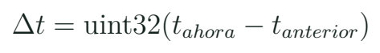

Temporización y máquinas de estados: atender más de una tarea
Construir una secuencia que siga atendiendo eventos mientras transcurre un intervalo.
Por qué un programa correcto puede responder tarde
delay() expresa una espera cómoda cuando solo importa una secuencia. Mientras esa función bloquea el recorrido principal, no se ejecutan las otras instrucciones de loop(). Algunos periféricos e interrupciones pueden seguir funcionando, pero la lógica que dejaste después de la espera debe aguardar. Si un aviso requiere observar el botón durante una secuencia de tres segundos, una espera larga puede retrasar esa observación. El problema se descubre definiendo una tarea adicional, no prohibiendo una función por su nombre.

El semáforo del laboratorio ya usa millis() y switch. Lo conservamos y explicamos antes de aumentar su complejidad. Caja fuerte, detector de intrusos y ascensor ofrecen variantes de eventos y estados. En una misma clase no construiremos cuatro mecanismos: compararemos sus lógicas y cada equipo implementará una sola variación. Lo aprendido debe transferirse a un nuevo caso en lugar de convertirse en una lista de programas copiados.
Tiempo transcurrido y retorno del contador
millis() informa un contador de milisegundos desde el inicio. Para decidir si venció un intervalo, calculamos la resta entre el valor actual y el guardado. Con un tipo sin signo de 32 bits, esa resta permite tratar correctamente un retorno del contador para los intervalos cortos del curso. La comparación directa contra un instante futuro calculado con suma puede comportarse mal al atravesar ese retorno. No se trata de memorizar una frase: se puede comprobar con números pequeños y después con valores cercanos al límite.

Patrón temporal
uint32_t now = millis();
if (uint32_t(now-last) >= interval_ms) {
last = now;
actualizarTarea();
}Guardar last = now evita intentar recuperar todas las ejecuciones perdidas después de una demora. Actualizar last += interval_ms responde a otra política de agenda. Primero elegiremos una tarea y una política explícitas. Para medir RPM más adelante, usaremos el tiempo realmente transcurrido; para un modelo matemático de paso fijo, el tiempo del modelo tendrá su propio significado. Dos relojes con la misma unidad pueden representar referencias distintas.
Estado, evento y transición
Un estado conserva qué situación del sistema está activa. Un evento señala algo que ocurrió o una condición que acaba de cumplirse. La transición define a qué estado se pasa y qué acciones se ejecutan. En el semáforo, ROJO, VERDE y AMARILLO son estados. “Han transcurrido tres segundos” es una condición de transición. Una solicitud peatonal puede quedar guardada para atenderse cuando corresponda. Separar estas ideas permite dibujar la lógica antes de escribir switch.
Fragmento de la secuencia
| Estado | Condición | Siguiente estado |
|---|---|---|
| ROJO | 3 s transcurridos | VERDE |
| VERDE | 3 s transcurridos | AMARILLO |
| AMARILLO | 1 s transcurrido | ROJO |
Solicitud durante verde
Se pulsa el botón durante verde. ¿Dónde conservas la solicitud hasta llegar a rojo?
Ver razonamiento del caso
En una variable de solicitud persistente. El evento no se conserva si solo se pregunta por el nivel instantáneo al llegar a rojo. La variable se limpia después de atender la condición definida.
Una variable posicionActual en un ascensor de pasos puede guardar la posición ordenada sin haber medido el movimiento. Su nombre no confirma que una cabina haya llegado. En el curso usamos esa diferencia para distinguir estado de software y observación del objeto. La variante de ascensor queda como estudio de lógica; un montaje real necesitaría resolver referencia inicial, driver, sensores y límites del mecanismo.
Lectura de una transición pequeña
Núcleo de c03_estados
if (digitalRead(BTN) == LOW) request = true;
if (state == State::GREEN
&& uint32_t(now-since) >= 3000) {
enter(State::YELLOW, now);
}La función enter() centraliza la asignación del estado, la referencia temporal y las salidas. Así no quedan luces con valores heredados de otra rama. El programa de referencia registra la solicitud y no obliga a que el usuario siga pulsando hasta el momento de atención. En una interfaz real se puede añadir el antirrebote de la clase anterior. Ambas funciones tienen propósitos distintos: una define la secuencia y la otra interpreta el contacto.
Para depurar, construye una tabla con tiempo, estado, entrada y acción. No es necesario imprimir miles de mensajes por segundo. Registra transiciones y hechos importantes para que el monitor permita reconstruir la secuencia. Si cada recorrido de loop() emite una línea, la propia comunicación puede ocupar una parte importante del tiempo y esconder lo que intentabas observar. Un registro útil se diseña alrededor de preguntas concretas.
Laboratorio de respuesta y variación
- Dibuja la tabla de transiciones y señala qué variables deben conservarse.
- Ejecuta el semáforo y pulsa en cada uno de sus tres estados.
- Añade un contador de solicitudes atendidas sin detener la secuencia.
- Compara una versión con delay(3000) y otra por tiempo transcurrido.
- Introduce una acción de parpadeo independiente para mostrar dos agendas.
- Elige caja fuerte o PIR como variante y describe su estado inicial y su transición de retorno.
- Conserva un registro de eventos que permita explicar una prueba completa.
Registro de prueba
| Tiempo / ms | Estado | Evento / acción |
|---|---|---|
| Inicio | Por registrar | Estado inicial |
| Solicitud | Por registrar | Entrada observada |
| Transición | Por registrar | Cambio de salidas |
| Atención | Por registrar | Solicitud consumida |
La prueba busca una diferencia de comportamiento: por ejemplo, qué sucede con una solicitud breve que aparece durante una espera. Observar solo que las luces completan el ciclo no responde esa pregunta. Si el equipo afirma que la respuesta es “inmediata”, debe decir cómo la observó y qué demora podría no detectar con ese método. En esta etapa basta demostrar que el evento se conserva y se atiende según una regla.
Tres estados para un banco de sensores
Una aplicación cercana al mercado UAV puede usar INICIO, LISTO y FALLO. En INICIO se preparan los periféricos; en LISTO se adquieren y muestran datos; en FALLO se informa una condición que impide tratarlos como recientes. El estado describe el sistema, mientras un LED u OLED lo presenta. La misma estructura permitirá que la clase final detecte un sensor ausente sin seguir mostrando una lectura antigua como si fuera nueva.
Transferencia de la lógica
| Proyecto | Evento | Qué se conserva |
|---|---|---|
| Caja fuerte | Clave aceptada | Estado de acceso |
| PIR | Cambio de movimiento | Estado de aviso |
| Banco UAV | Lectura vencida | Estado de datos |
Investiga en una biblioteca si sus funciones esperan a terminar una operación. Una interfaz aparentemente sencilla puede ocultar una espera. Identifica el comportamiento de motor.step() en la variante del ascensor y de pulseIn() en el sensor ultrasónico. Una arquitectura sin delay() todavía puede bloquear en otras llamadas. La habilidad es reconocer la duración y el lugar de la espera, no buscar una palabra prohibida.
Práctica guiada
- Plantear una solicitud que ocurra en mitad de una secuencia.
- Describir la tabla de estados antes de ejecutar el programa.
- Comparar las dos políticas de temporización con c03_estados.
- Transferir la misma lógica a INICIO, LISTO y FALLO.
Preguntas de cierre
¿Quitar delay() garantiza un programa no bloqueante?
No; otras llamadas también pueden esperar. Hay que estudiar su duración y su efecto.
¿Qué guarda la solicitud?
Una variable persistente que se limpia al atenderla según la regla.
¿posicionActual demuestra posición física?
Solo si existe una medición que la respalde; un conteo de pasos ordenados puede ser únicamente una estimación.
Entrega
Tabla de estados, variante temporal y registro de atención de eventos.
Proyectos MECRO relacionados
- 01. Fundamentos: El Semáforo · Núcleo. GPIO y estados Abrir referencia Wokwi
- 08. Caja Fuerte · Variante. Estados y eventos: caja fuerte Abrir referencia Wokwi
- 09. Detector de Intrusos · Variante. Estados y eventos: intrusión Abrir referencia Wokwi
- 14. Ascensor de 3 Pisos · Caso y extensión. Estados; homing y driver por corregir Abrir referencia Wokwi
Fuentes para ampliar
[MECRO] MECRO. Laboratorio Electrónica con ESP32: veinte proyectos.
[TIME] Arduino. Referencia del lenguaje: millis.
[UART] Espressif Systems. Arduino-ESP32: Serial/UART.